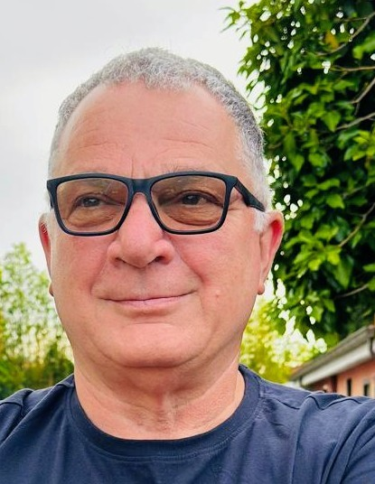

Presidente
Consiglio direttivo
Persone e responsabilità dell’associazione.
Chi siamo
Persone, idee, relazioni
Generazioni Insieme APS è un'associazione senza scopo di lucro fondata a Roma l'8 maggio 2025. Promuoviamo solidarietà, cultura, inclusione sociale, formazione e partecipazione civica.
Crediamo che l'esperienza delle persone anziane e l'energia delle nuove generazioni possano incontrarsi per creare opportunità reali.
«Ogni persona ha qualcosa da raccontare. Ogni generazione ha qualcosa da imparare.»
Le persone dell'associazione
Il Consiglio direttivo
Una guida condivisa, al servizio della partecipazione, della cultura e del dialogo tra generazioni.
Vicepresidente
Giancarlo Tesone

Segretario
Maurizio Pecatelli

Consigliere
Maurizio Todaro

Consigliera
Fiorella Terrinoni

Consigliere
Pietro Fazio

Consigliere
Massimo Di Franco
Composizione del primo Consiglio direttivo indicata nell’Atto costitutivo dell’8 maggio 2025. Da verificare prima della pubblicazione che non siano intervenute successive modifiche.